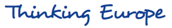

Gymnasium Rheinkamp Europaschule Moers
Inhalt
- Das GREM
- 🏛️ Unsere vier Säulen
- 🫠Ganztag
- 🌠Europa
- 🗣️ Bilingualer Bildungsgang – Sprachliche Vielfalt mit Tradition
- 🌠Fremdsprachenangebot – Brücken bauen durch Sprache
- 🤠Europa im Ganztag – Projekte, AGs und gelebte Vielfalt
- 🌠Austausch, Projekte & Wettbewerbe – Europa praktisch erleben
- 📠Europäische Qualifikationen – Vorbereitung auf die Zukunft
- 🅠Ausgezeichnetes Engagement
- 💻 Rund um Digitalität
- 🧪 MINT
- Anhang
Schulprogramm Stand August 2024